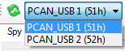

The CAN controller panel tool bar contains common commands for both ‘Spy & Manual’ and ‘Cycle’ modes
At the CANStream start up or on new controller opening, if a PCAN-USB adapter is connected and free (not used by another application) CANStream takes the control of this adapter and tool bar is as shown above.
By default the CAN Baud rate is set to 1000 kBit/s, however Baud rate can be changed in the CAN Configuration editor.
The ‘Stop connection’ button  permits to stop the connection and to release the PCAN-USB adapter in order to make it available for another controller panel or another application. Click the ‘Start connection’ button
permits to stop the connection and to release the PCAN-USB adapter in order to make it available for another controller panel or another application. Click the ‘Start connection’ button  to restart the connection using the same PCAN-USB adapter.
to restart the connection using the same PCAN-USB adapter.
When the connection stops, ‘Refresh PCAN USB Devices list’ command and the PCAN USB device list are enabled.

Click the ‘Refresh PCAN USB Devices list’ button to refresh the ‘PCAN USB Devices list’. Click in the list to select the PCAN-USB device that you want use.

The ‘Start stream recording’ button starts the data recorder. When it is clicked, the ‘Stop stream recording’ button becomes enabled allowing the stop of data recording.
Command ‘View’  contains several sub-commands to customize the appearance of the ‘Spy & Manual’ panel. See the ‘Manual control layout’ section for more details.
contains several sub-commands to customize the appearance of the ‘Spy & Manual’ panel. See the ‘Manual control layout’ section for more details.
Created with the Personal Edition of HelpNDoc: Produce electronic books easily